The retina is a layer of tissue in the back of the eye that senses light and sends that collected light to the brain for more processing(to see around). In the center of this nerve tissue is the macula. It provides the sharp, central vision needed for reading, driving and seeing fine detail. Serious eye diseases as well as systemic diseases manifest themselves in the retina.
Retinal disorders affect the normal functionality of the eye. They can affect someone vision, and some can be serious enough to cause blindness.
The emerging imaging modality Optical Coherence Tomography (OCT**), widely used in the field of biomedical imaging, helped to image the retinal microvasculature and blood flow and three dimensional images of living cone photoreceptors respectively. The photoreceptors are one of the key components of the retinal images, which act as an indicator to detect or monitor retinal diseases. A review is in Retinal Imaging and Image Analysis.
**OCT is used to gain informations about the light scattering properties of a sample by
illuminating it with some short laser pulse and measuring the backscattered light.
For more precise measurements, the backscattered light is first superimposed with the original laser pulse( called reference) and then the intensity of this interference pattern(coherence of these two light beams) is measured through a photon detector /spectrometer.
The Spectral domain-optical coherence tomography (SD-OCT) images form a cross-sectional volumetric
images of the tissues which can be used for analysis of tissue structure and properties of the retina.
The resolution which can be defined as the capability of distinguishing between two separate but adjacent layers
suffer from the formation of irregular granular pattern due to the underlying physics and the computational process to reconstruct the images from the detected forward /backward measurements(intensity peaks).
The resolution of an image is how small details of the actual sample can be resolved or detected. The
number of pixels(sampling frequency) in an image determines the limit of spatial resolution. One striking fact in SD-OCT is a high sampling frequency does not necessarily foster high image resolution. The sample usually contains layers with different refractive indices and only under perfect conditions the photo detector may be able to detect accurately the interference associated to those
refractive indices(tissue layers). Instability during image acquisition/reconstruction can grossly affect image quality.
The instrument sensitivity, the optics of the microscope, the wavelength of light source and the photon detector, also influence the tissue layers resolution.
The reconstructed image has a color space content not enough to reconstruct fully the sample. This suddenly discontinued color content presents a real challenge to properly interpret the reconstructed image. Therefore, the first step in SD-OCT image processing needs an assessment of the color space content characteristics, i.e. automatically quantify the most informative and relevant features contained in the collected lights. This assessment may help to address the following concerns to adjust the instrument toward efficient sensitivity and resolution:
How much of the noise and artifact in the reconstructed image can be avoided by reviewing the image acquisition/reconstruction?
How much can the image quality be improved by further image processing software to highlight actual micro-structures(layers) in the reconstructed image?
In this essay, we are mainly motivated to test and assess the utility of our recent developed software Fluorescence Imaging Analysis Using Deep Discrepancy Learning Process to automatically quantify the most informative and relevant features contained in the primary image generated by Retinal Optical Coherence Tomography Imaging.
We consider our recent developed software as a practical way of looking at third order texture. The framework is based on the
mathematical formulation of L2 discrepancy that measures the pixel-colors presence in all multiresolution-subrectangles defining the color-space, i.e. captured lights in the image and is providing an indication, without loss of spatial information, related to how the pixel-colors are globally scattered in the color-space. The L2 discrepancy value captures the global degree of discrepancies in color-space and enables the formulation of a Deep Discrepancy Learning Process.
This Deep Discrepancy Learning Process (DDLP) is scalable and makes use of the totality or partially the provided channels in the primary image and is simple to numerically implement without assuming any parametric form in the primary image data contents. The results showed that it captured the reflected pattern in the image with more insights about the colors spatial distribution where the pixel colors are either clumped or scarce, see Section "Numerical Illustrations".
The DDLP defines image information content as a set of descriptors/covariantes of the primary image color-space structures.
Many levels of descriptors are provided:
Pixel-level descriptors, the colors spatial distribution where the pixel colors are either clumped or scarce.
Hence creating one histogram for multi-variable data, i.e. a plot to discover, and show, the underlying frequency distribution of a set of continuous data (RGB colors). We refer to these Pixel-level descriptors as Sensitivity Descriptors.
Global level parameters outlining the entire light scattering proprieties in the primary image color-space structures.
These descriptors are used to assess the sensitivity/resolution and image quality and can be used to discern the difference between a number of given primary images(different image acquisition/reconstruction processes).
Numerical Illustrations
The L2 DDLP provides the Sensitivity Descriptors for the red color, green color and blue color in the image color space content as:
Univariate distribution, called Rd.
Univariate distribution, called Gd.
Univariate distribution, called Gb.
Bivariate distribution representing both the X-color and Y-color, called XYd.
three-variate distribution representing the RGB-colors, called RGBd.
The Discrepancy Image has the color-space defined by combining these Sensitivity Descriptors. The L2 DDLP generates all possible combinations to form all Discrepancy Images. The colors and texture in the Discrepancy Image provide insights about the
distribution of specific colors(via their associated Sensitivity Descriptors ) around specific regions of interest (ROI) in the primary image.
The results show that the discrepancy images captured the reflected pattern in the image data and provides a set of segments that collectively cover the entire image. Each of the pixels in a region are similar with respect to some characteristic in the image data and show some discrepancies to other pixels, i.e. able to define adjacent regions. This discrepancy framework provides a quantitative segmentation of the primary image and highlights where the pixel colors are uniform, clumped or scarce and also gives quantitative indication about the co-occurrence of two specific colors in RGB color space content.
All the images used in this essay were selected from Internet. Nevertheless, our illustration can be conducted on the original high resolution images in the same manner and enable the L2 DDLP to capture more refined information.
RGB Color Space Content
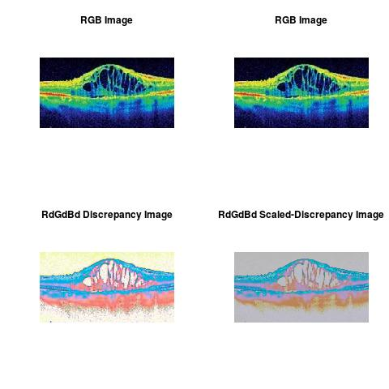
Co-Occurrence of R-G colors
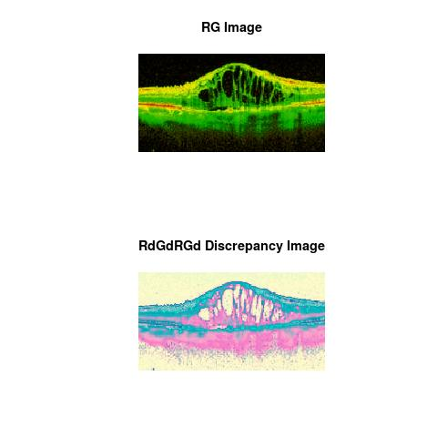
Co-Occurrence of G-B colors
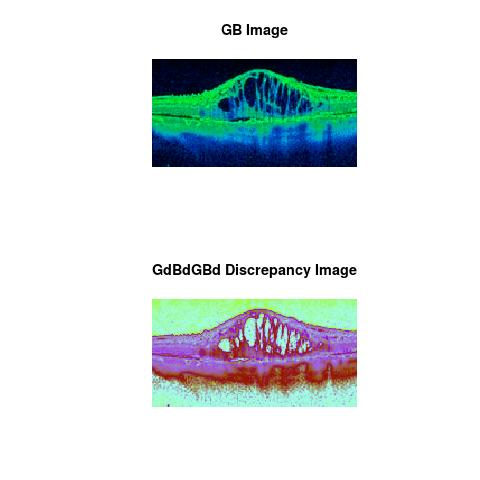
Co-Occurrence of R-B colors
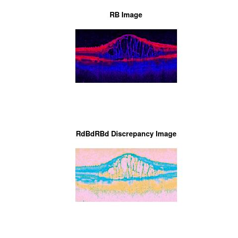
RGB Color Space Content
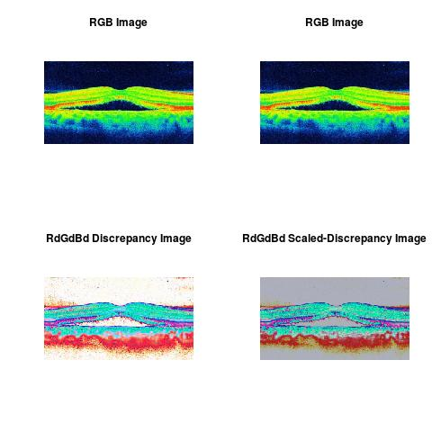
Co-Occurrence of R-G colors
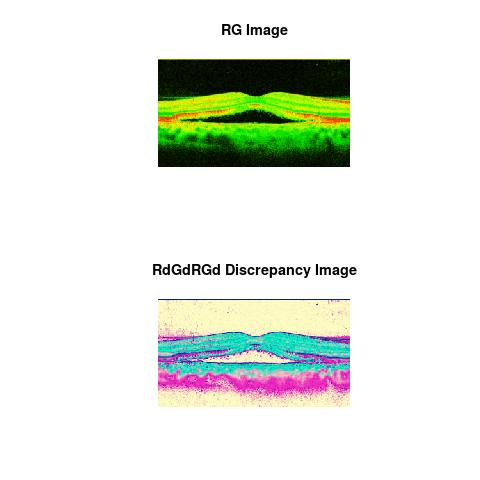
Co-Occurrence of G-B colors
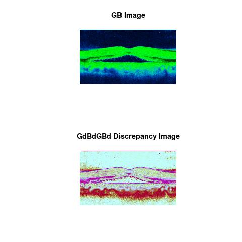
Co-Occurrence of R-B colors
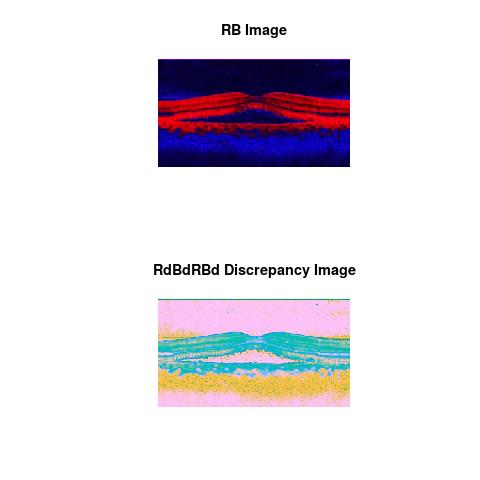
RGB Color Space Content
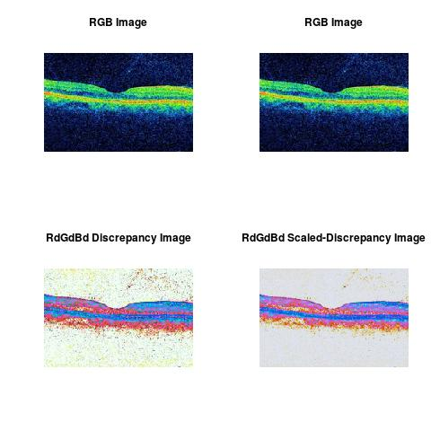
Co-Occurrence of R-G colors
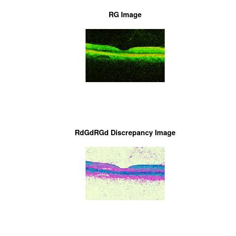
Co-Occurrence of G-B colors
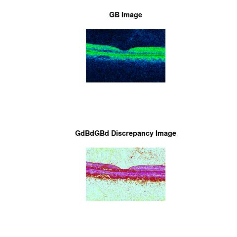
Co-Occurrence of R-B colors
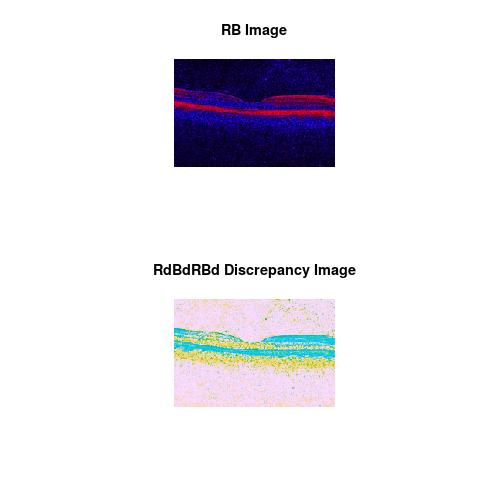
RGB Color Space Content
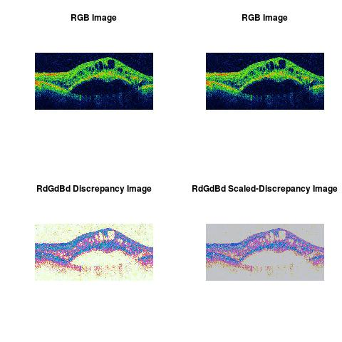
Co-Occurrence of R-G colors
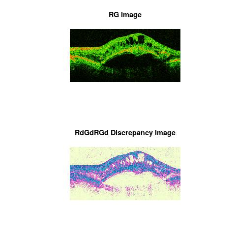
Co-Occurrence of G-B colors
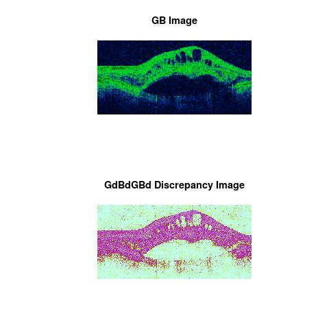
Co-Occurrence of R-B colors
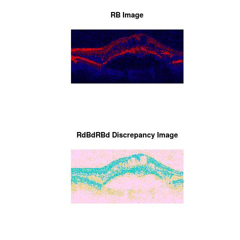
RGB Color Space Content
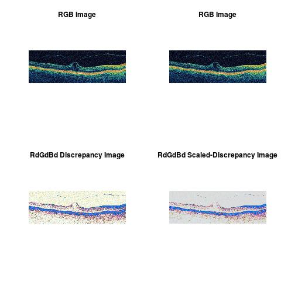
Co-Occurrence of R-G colors
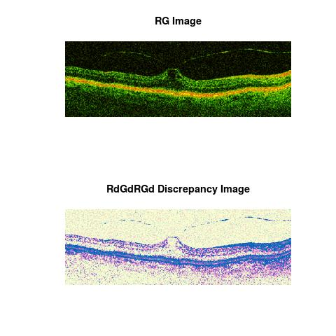
Co-Occurrence of G-B colors
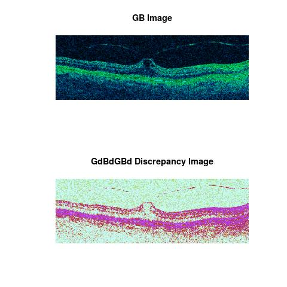
Co-Occurrence of R-B colors
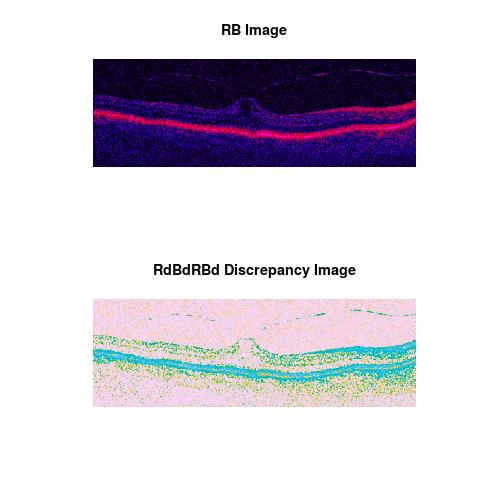
RGB Color Space Content
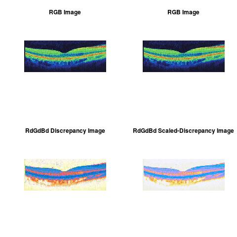
Co-Occurrence of R-G colors
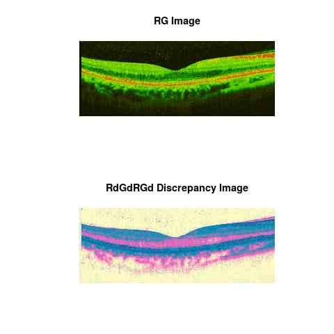
Co-Occurrence of G-B colors
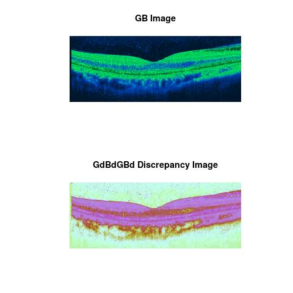
Co-Occurrence of R-B colors
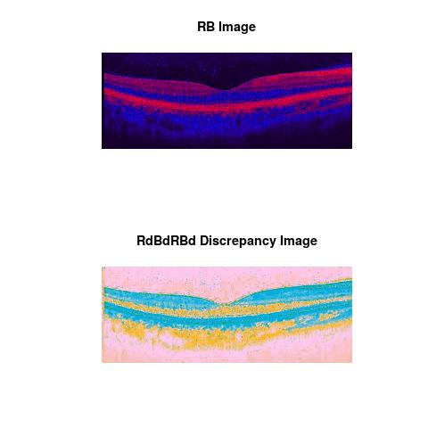
Note
The theoretical part of this work was done when the author was in his PhD thesis (1994-1998), at the University of Savoie, Department of Mathematics, France. The work was shaped toward real applications accordingly to the learned scientific experience.
Statistics and Applied Mathematics for Data Analytics, Identify opportunities to apply Mathematical Statistics, Numerical Methods, Machine Learning and Pattern Recognition to investigate and implement solutions to the field of Data Content Analytics. Data prediction via computational methods to predict from massive amounts of data (Big Data Content). These methods included clustering, regression, survival analysis, neural network, classification , ranking, deep discrepancy learning .